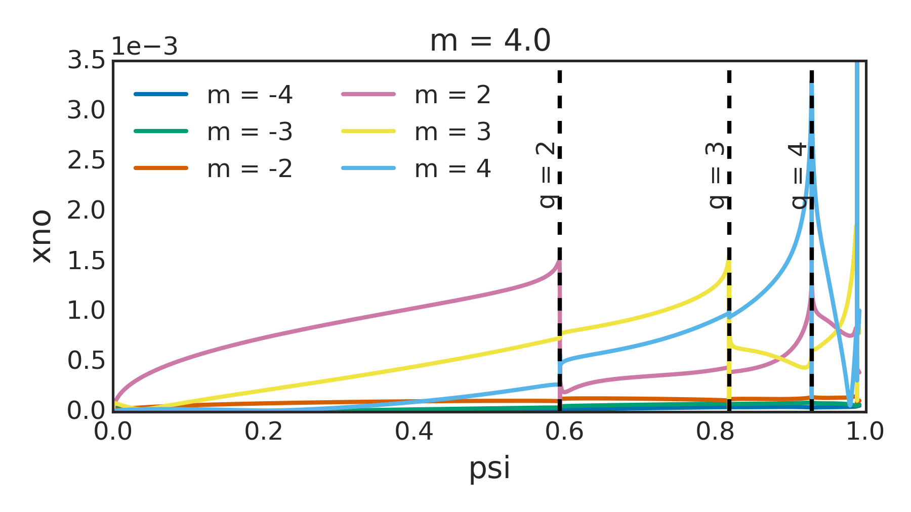
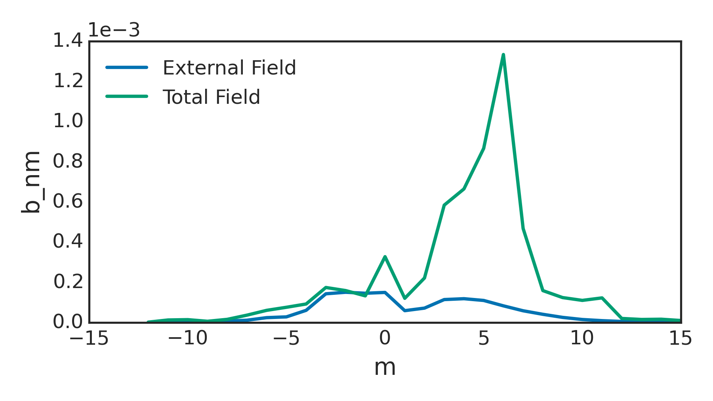

Coordinates¶
A clear understanding of the input and output coordinate conventions is essential for GPEC. There are up to 3 separate coordinate systems use in the programs within GPEC package. This include,
The ‘working coordinates’ defined by jac_type in equil.in.
The ‘input coordinates’ defined by jac_in, tmag_in, and jsurf_in when applicable.
The ‘output coordinates’ defined by jac_out, tmag_out, and jsurf_out when applicable.
The DCON working coordinate system is used for nearly all internal calculations in the GPEC package, but the external drive may be prescribed in input coordinates (2) and the final perturbed equilibrium results may be converted to output coordinates (3). The working coordinates are magnetic cooridinates. The input and output coordinates may be converted to cylindrical \(\phi\) using the tmag_in or tmag_out variables.
Note
The responsibility of the user is to make sure the GPEC input Jacobian is consistent with the 3D error field input file and the PENTRC input jacobian is consistent with the GPEC output. OMFIT helps sync some of this automatically. However, the user should be aware that each coordinate system has different strengths. Hamada coordinates have the best convergence properties in general, but are poor for the inboard side of the plasma. PEST coordinates are user friendly but poor for outboard resolution. Boozer coordinates tend to find a middle ground between these, with mild convergence and fair resolution throughout the plasma.
The gpec_control_output_n# netcdf file gives spectral quantities in the working coordinates (specified in the ‘jacobian’ attribute). It also provides a J_out matrix. The dot product of this matrix and the b or xi spectra will convert the the output coordinates, reproducing the final table of the gpec_control_n#.out ascii output. Note that the same transformation cannot be safely made for other weighted quantities.
Translating to Machine Space¶
When comparing spectral GPEC outputs to real space quantities or to other codes, it is important to remember
GPEC uses a right handed magnetic coordinate system decomposed in \(\exp(im\theta-in\phi)\).
GPEC effectively uses CCW \(\phi\) for left-handed (LH) configurations, but CW \(\phi\) for right-handed (RH) configurations.
GPEC always uses upward outboard \(\theta\).
See also
For a comprehensive reference of all sign conventions (including rotation velocity, safety factor, mode number resonance, and code interfacing rules), see Sign Conventions Reference.
The result of this is that the pitch-aligned field will always be positive m. This convention makes in-house analysis nice and easy. For example, one can always plot the m=2 perturbed normal displacement profile and see the resonant surface behavior at q=2. The m=-2 normal displacement will always be nonresonant. This is shown in the figure below from the package DIII-D example, which is a LH plasma.


For another example, the figure below shows a that the positive m fields are magnified for a DIII-D example control surface. We always look here for kink amplification.


The convention does require some awareness from the user when interfacing with real-space quantities and/or other codes though. For example, the user does need to know that the spectrum rotates by \(-\phi\) if real space coil rotates by \(\phi\) in a RH configuration.
To facilitate interfacing with other codes that may have different handedness conventions, the helicity is included in the gpec_control_output netcdf file. The helicity is defined as +1 for right handed plasmas in which Bt and Ip are in the same direction, and -1 for left handed plasmas in which Bt and Ip are apposed.
In the real space representation decomposed in \(\exp(-in\phi)\) with CCW \(\phi\), GPEC takes the complex conjugate of the inverse poloidal Fourier transform for RH configurations. This is restoring CCW \(\phi\) (according to 2), and is done internally before writing function outputs. Note in the full Fourier representation by \(\exp(im\theta-in\phi)\), the complex conjugate operation does not simply restore CCW phi for RH configurations. It will also flip up and down.
Interfacing with SURFMN¶
SURFMN is a popular vacuum spectrum code. It calculates the field from experimental coil geometries and/or intrinsic error fields in magnetic coordinates on plasma flux surfaces. SURFMN also uses upward outboard \(\theta\). However, it expands in \(\exp(-im\theta-in\phi)\) and always uses a CCW \(\phi\). In SURFMN, the pitch resonant m can flip sign dependending on the sign of Bt and Ip.
As a practical example, interfacing a Fourier representation of the 3D field on a flux surface from GPEC with SURFMN would require using,
m_surfmn = helicity * m_gpec
b_surfmn = real(b_m) - i * helicity * imag(b_m).
For LH configurations only the sign of m is flipped (according to 1). For RH configurations, m remains unchanged but the complex conjugate is taken (the combined effect of to 1 & 2).
Interfacing with VACUUM¶
Vacuum is the code used in DCON to calculate the vacuum energy matrices, which combine with the plasma energy matrix to describe the full system eigenmodes. The VACUUM code uses CCW \(\phi\) and downward outboard \(\theta\). We thus use the complex conjugate of RH configurations to interface GPEC and VACUUM.
Resonant Coupling and Dominant Mode Overlap¶
Coupling matrices (singcoup_flag) relate area-weighted resonant quantities to the root-area-weighted vacuum field, making their SVD coordinate invariant (Park 2008, Pharr 2026):
Singular values carry the units of each C; right-singular vectors \(\mathbf{v}_j\) are unitless.
Inputs¶
Fully annotated namelist input files can be found in the $GPECHOME/input directory and any of the examples in $GPECHOME/docs/examples directories of any public installation.
The major input files requiring user interaction are as follows.
The EQUIL Namelist¶
This namelist specifies the equilibrium inputs and how equilibrium quantities are splined for use in the various executables.
&EQUIL_CONTROL
eq_type="efit" ! Type of the input 2D equilibrium file. Accepts efit, chease, fluxgrid, transp, jsolver, lar, sol, etc.
eq_filename="mypath" ! Path to input file (geqdsk, etc.) Must specified (no default).
jac_type="hamada" ! Working coordinate system for all DCON and GPEC calculations. Overrides individual powers. Accepts hamada, pest, boozer, equal_arc, park, other
power_bp=0 ! del.B ~ B_p**power_bp * B**power_b / R**power_r
power_b=0 ! del.B ~ B_p**power_bp * B**power_b / R**power_r
power_r=0 ! del.B ~ B_p**power_bp * B**power_b / R**power_r
grid_type="ldp" ! Radial grid packing of equilibrium quantities. Accepts rho, ldp, pow1, pow2, or original. ldp packs points near the core and edge. pow* packs near the edge. original uses the input file's surfaces between psilow and psihigh, and is too coarse at the edge for uniform-psi g-files.
psilow=1e-2 ! Minimum value of psi, normalized from 0 to 1
psihigh=0.994 ! Maximum value of psi, normalized from 0 to 1 (ldp_i with psi bounds: capped at the last file surface)
mpsi=128 ! Number of radial grid intervals for equilibrium quantities
mtheta=256 ! Number of equally spaced poloidal grid intervals for all splines
newq0=0 ! Grad-Shafranov solution invariant adjustment of the q profile to give the specified value of q at the axis. Default 0 uses input file value.
etol = 1e-7 ! Tolerance for direct equilibrium reconstruction of flux surfaces/coordinates
enstep=16384 ! Maximum number of LSODE steps allowed per field-line integral in the direct equilibrium reconstruction
use_classic_splines = f ! Use a classical cubic spline instead of tri-diagonal solution for splines with extrapolation boundary conditions
profile_source="values" ! efit, and ldp_i files with FF', p' records. "values" (default): spline the tabulated f, p. "integrate": integrate FF', p' inward from the boundary and keep them as knot derivatives; for g-files with single-precision values; can shift pedestal surfaces
input_only=f ! Generate information about the input and then quit with no further calculation
use_galgrid=t ! Use the same grid as galerkin method when regrid=.True.
/
&EQUIL_OUTPUT
gse_flag=f ! Produces diagnostic output for accuracy of solution to Grad-Shafranov equation
out_eq_1d=f ! Ascii output of 1D equilibrium file data
bin_eq_1d=f ! Binary output of 1D equilibrium file data
out_eq_2d=f ! Ascii output of 2D equilibrium file data
bin_eq_2d=t ! Binary output of 2D equilibrium file data (set true for GPEC)
out_2d=f ! Ascii output of processed 2D data
bin_2d=f ! Binary output of processed 2D data
dump_flag=f ! Binary dump of basic equilibrium data and 2D rzphi spline
out_ahg2msc=f ! Output deprecated ahg2msc.out files. This is used to communicate with vacuum, but is now done through memory.
/
The DCON Namelist¶
This namelist controls the behavior of the DCON code and determines its outputs.
&DCON_CONTROL
bal_flag=f ! Ideal MHD ballooning criterion for short wavelengths
mat_flag=t ! Construct coefficient matrices for diagnostic purposes
ode_flag=t ! Integrate ODE's for determining stability of internal long-wavelength mode (must be true for GPEC)
vac_flag=t ! Compute plasma, vacuum, and total energies for free-boundary modes
mer_flag=t ! Evaluate the Mercier criterian
sas_flag=f ! Safety factor (q) limit determined as q_ir+dmlim where q_ir is the equil outermost rational
dmlim=0.2 ! See sas_flag
psiedge=0.988 ! If less then psilim, calculates dW(psi) between psiedge and psilim, then runs with truncation at max(dW)
qlow=1.02 ! Integration initiated at q determined by minimum of qlow and q0 from equil
qhigh=20.2 ! Integration terminated at q limit determined by minimum of qhigh and qa from equil
sing_start=0 ! Start integration at the sing_start'th rational from the axis (psilow)
reform_eq_with_psilim=f ! Reforms equilibrium splines between psilow and psilim determined by psihigh/sas_flag/qhigh/peak_flag
nn=1 ! Toroidal mode number
delta_mlow=8 ! Expands lower bound of Fourier harmonics
delta_mhigh=8 ! Expands upper bound of Fourier harmonics
delta_mband=0 ! Integration keeps only this wide a band of solutions along the diagonal in m,m'
mthvac=512 ! Number of points used in splines over poloidal angle at plasma-vacuum interface. Overrides vac.in mth.
thmax0=1 ! Linear multiplier on the automatic choice of theta integration bounds for high-n ideal ballooning stability computation (strictly, -inf to -inf)
kin_flag = t ! Kinetic EL equation (default: false)
con_flag = t ! Continue integration through layers (default: false)
kinfac1 = 1.0 ! Scale factor for energy contribution (default : 1.0)
kinfac2 = 1.0 ! Scale factor for torque contribution (default : 1.0)
kingridtype = 0 ! Regular grid method (default : 0)
passing_flag = t ! Includes passing particle effects in kinetic EL equation (default: false)
trapped_flag = t ! Includes trapped particle effects in kinetic EL equation (default: true)
ktanh_flag = f ! Ignore kinetic effects in the core smoothly (default: false)
ktc = 0.1 ! Parameter activated by ktanh_flag: roughly corresponds to core width ignored (default: 0.1)
ktw = 50.0 ! Parameter activated by ktanh_flag: width of hyper-tangential functions (default: 50.0)
ion_flag = t ! Include ion dW_k when kin_flag is true (summed with electron contribution if electron_flag true)
electron_flag = f ! Include electron dW_k when kin_flag is true (summed with ion contribution if ion_flag true)
dcon_kin_threads=0 ! Parallel calculations of the kinetic matrix components (parallel execution of mpsi*(2*nl+1) calculations where mpsi is set in equil.in and nl in pentrc.in). Setting to <= 0 uses OMP_NUM_THREADS env variable.
tol_nr=1e-6 ! Relative tolerance of dynamic integration steps away from rationals
tol_r=1e-7 ! Relative tolerance of dynamic integration steps near rationals
crossover=1e-2 ! Fractional distance from rational q at which tolerance is switched to tol_r
singfac_min=1e-4 ! Fractional distance from rational q at which ideal jump condition is enforced
ucrit=1e3 ! Maximum fraction of solutions allowed before re-normalized
wv_farwall_flag = f ! Force nowall gpec calculations while calculating mutual inductance with the wall, when set true.
termbycross_flag = t ! Terminate ODE solver in the event of a zero crossing (default: false)
use_classic_splines = f ! Use a classical cubic spline instead of tri-diagonal solution for splines with extrapolation boundary conditions
/
&DCON_OUTPUT
out_fund=f ! Output fundamental matrices A,B,C,D,E,H
crit_break=t ! Color of the crit curve changes when crossing a singular surface
ahb_flag=f ! Output normal magnetic field eigenvalues and eigenfunctons at plasma-vacuum interface (must be false for GPEC)
msol_ahb=1 ! Number of eigenfunctions output by ahb_flag=t ?
mthsurf0=1 ! Linear multiplier on number of boundary points used to display surface eigenfunctions for ahb_flag=t
bin_euler=t ! Output M psi-by-M euler-lagrange solutions to binary file euler.bin
bin_vac=f ! Output deprecated binary vacuum.bin containing vacuum energy matrices
euler_stride=1 ! Output only every euler_stride'th psi step to binary file
out_bal1=f ! Ascii output for bal_flag poloidal functions
bin_bal1=f ! Binary output for bal_flag poloidal functions
out_bal2=f ! Ascii output for bal_flag functions
bin_bal2=f ! Binary output for bal_flag functions
netcdf_out=t ! Replicate ascii dcon.out information in a netcdf file
/
Note
Additional DCON documentation can be found in the pre-GPEC documentation here.
The GPEC Namelist¶
This namelist sets the inputs, controls the behavior, and determines the outputs of the GPEC code.
&GPEC_INPUT
dcon_dir = "" ! Path to DCON outputs. Individual file paths are appended to this
idconfile = "euler.bin" ! Eigenfunctions output by DCON run
ieqfile = "psi_in.bin" ! Flux surfaces output by DCON run
rdconfile = "globalsol.bin" ! Galerkin eigenfunctions output by resistive DCON run
gal_flag = f ! Use the Galerkin eigenfunctions from resistive DCON instead of the ideal DCON shooting method solutions
jac_in="" ! Coordinate system of external perturbation (affects data_flag and harmonic_flag). Options include: pest,boozer,hamada
jsurf_in=0 ! True(1) if external perturbation is area weighted (i.e. flux)
tmag_in =1 ! True(1) if external perturbation has toroidal angle defined by jac_in. False(0) if machine angle.
mthsurf =0 ! Number of poloidal angle gridpoints. Minimum of twice the Nyquist condition from DCON m limits is enforced.
coil_flag=t ! Calculate external perturbation from coils in coil.in
data_flag=f ! Apply perturbation from thrid party code output
data_type="surfmn" ! Name of said code. Choose: surfmn,??
infile="path/to/file" ! Path to said output
nmin=0 ! Extra parameters needed to read surfmn files.
nmax=64 ! Extra parameters needed to read surfmn files.
mmin=-64 ! Extra parameters needed to read surfmn files.
mmax=64 ! Extra parameters needed to read surfmn files.
harmonic_flag=f ! Apply self-defined perturbations
cosmn(3)=1e-4 ! Real part of m=3 component (n defined by DCON run).
sinmn(6)=1e-4 ! Imaginary part of m=6 component. etc.
displacement_flag=f ! Perturbations are displacement (m). Default is field (T).
fixed_boundary_flag=f ! Total perturbation = external perturbation
mode_flag = f ! Return only a single DCON eigenfunction defined by mode (ignores external pert.)
mode = 0 ! DCON eigen function index (1 is least stable)
filter_types = 'w' ! Isolate the filter_modes of energy (w), reluctance (r), permiability (p) or singular coupling (s) eigenvectors/singular-vectors
filter_modes = 0 ! Number of modes isolated, negative values isolate backwards from the last mode
/
&GPEC_CONTROL
resp_index=0 ! Integer 0-4, determining method of inductance matrix formation. 0 uses energy identity, and is recommended. Use 1 when using resistive DCON.
sing_spot=5e-4 ! Minimum distance to singular surface in (m-nq) space
sing_resspot=1.0 ! If use_res_spot=t, use inverse cube root of lundquist number scaled by sing_resspot in psi space as spot size
use_res_spot=f ! Use resistive singular layer width instead of fixed sing_spot
sing_interpspot=1.0 ! Scaling of the interpolation width, in units of spot size, for smoothed outputs of singular surface quantities
sing_npsi=100 ! Number of points between rational surfaces used for b-normal splines across sin_spot
reg_flag=f ! Regularize the solution near resonant surfaces
reg_spot=5e-2 ! Regularize by (m-nq)^2/((m-nq)^2+reg_spot^2)
chebyshev_flag=f ! Fit Chebyshev polynomials to the displacement.
nche=20 ! Number of Chebyshev polynomials used
use_classic_splines = f ! Use a classical cubic spline instead of tri-diagonal solution for splines with extrapolation boundary conditions
/
&GPEC_OUTPUT
jac_out="" ! Coordinate system of outputs
jsurf_out=0 ! True(1) for area weighted outputs (only appends standard gpec_control output)
tmag_out=1 ! True(1) for magnetic toroidal angle outputs (affects singcoup and singfld, appends gpec_control)
mlim_out=64 ! Fourier decomposed outputs will span -mlim_out<=m<=mlim_out when jac_out/=jac_type or tmag_out/=tmag_in
resp_flag=t ! Output energy, reluctance, inductance, and permeability eigenvalues, eigenvectors, and matrices
filter_flag=t ! Outputs energy, reluctance, permeability, and (optionally) the singular-coupling eigenmodes on the control surface
singcoup_flag=f ! Calculate coupling of each m to resonant surfaces
singfld_flag=f ! Output of resonant surface quantities (flux,current,etc.)
vsingfld_flag=f ! Output of vacuum resonant surface quantities
singthresh_flag=f ! Calculate SLAYRE and CALLEN's resonant field penetration threshold (requires kinetic profiles from pentrc.in)
singthresh_slayer_inpr=5.0 ! Scalar Prandtl number (viscosity) used by SLAYER for all rational surfaces
singthresh_slayer_inpr_prof=-1.0 ! Per-rational-surface Prandtl number profile, comma-separated and ordered by ascending q, up to 20 entries (e.g. singthresh_slayer_inpr_prof=3.0,5.0,8.0,12.0 for the q=2,3,4,5 surfaces). Any entry <= 0 falls back to the scalar singthresh_slayer_inpr
pmodb_flag=f ! Outputs delta-B_Lagrangian
xbnormal_flag=t ! Outputs normal displacement and field in plasma
vbnormal_flag=t ! Outputs vacuum normal displacement and field in plasma
xclebsch_flag=t ! Outputs clebsch coordinate displacement for PENT
dw_flag=t ! Outputs self-consistent energy and torque profiles (when kin_flag=t from DCON)
eqbrzphi_flag=t ! Outputs equilibrium field on regular (r,z) grid
brzphi_flag=t ! Outputs perturbed field on regular (r,z) grid
xrzphi_flag=f ! Outputs displacement on regular (r,z) grid
vbrzphi_flag=f ! Outputs field on regular (r,z) grid due to total boundary surface current (not a real field)
vvbrzphi_flag=f ! Outputs field on regular (r,z) grid due to external perturbation surface current (not a real field)
vsbrzphi_flag=f ! Outputs the field on regular (r,z) grid due to singular surface currents
ss_flag(3)=f ! Outputs the field on regular (r,z) grid due to the 3rd singular surface current, etc.
xbrzphifun_flag=f ! Outputs r,z, and perturbation vectors on psi,theta grid
arzphifun_flag=f ! Outputs r,z, and vector potential on psi,theta grid
nr = 128 ! Number of radial grid points in rzphi outputs
nz = 128 ! Number of vertical grid points in rzphi outputs
fun_flag=f ! Write outputs to (r,z) in addition to default (psi,m)
flux_flag=f ! Write outputs to (psi,theta) in addition to default (psi,m)
netcdf_flag=t ! Write all outputs in netcdf files
ascii_flag=f ! Write all outputs in ascii tables
max_linesout=0 ! Maximum length of ascii data tables enforced by increasing radial step size (iff .gt. 0).
bin_flag=f ! Write binary outputs for use with xdraw
bin_2d_flag=f ! Write 2D binary outputs for use with xdraw
verbose=t ! Print run log to terminal
effective_field_flag=f ! Calculate each contribution of destabilizing term and effective perturbed field [Bernstein, Handbook of Plasma Physics, 1983].
standard_form_flag=f ! Calculate the first-form plasma energy terms of Eq. (3.1) in docs/tex/recon/main.tex with the gamma|div xi|^2 term omitted.
effective_field_terms_flag=f ! Bernstein |C|^2 decomposition: |C|^2 = |Q|^2 + 2Re(V*.Q) + |V|^2, reported as A, B, Cpar, Iperp with the identity check epf = A+B+Cpar+Iperp.
curl_check_flag=f ! Under effective_field_flag, verify (curl C).grad(psi)=0 and write gpec_recon_cveri_sol*.out.
recon_out=t ! Under effective_field_flag/standard_form_flag/effective_field_terms_flag, write recon diagnostic files and gpec.log entries. If false, keep terminal summary only.
recon_int="spline" ! Radial quadrature of all three routes on the psifac grid: "spline" (default) or "trapezoid". The integrated psi range is printed beside the DCON psilow-psilim range.
! effective_field_flag, standard_form_flag and effective_field_terms_flag require mode_flag=t (choose mode) with coil_flag, data_flag, harmonic_flag and reg_flag all f; GPEC stops at input otherwise.
/
&GPEC_DIAGNOSE
timeit=f ! Print timer splits for major subroutines
radvar_flag=f ! Map various radial variables (rho,psi_tor) on psi_n grid
mutual_test_flag=f ! Test outputs for eigenvalues of mutual inductances and wall currents
/
The MATCH Namelist¶
This namelist controls the MATCH code, including which DCON eigenfunction (sol_num) it reconstructs.
&match_input
filename="euler.bin"
full=f
ideal_flag=t
contour_flag=t
sol_num=1 !DCON eigenfunction index for MATCH (1 = most unstable); sol_num=n>1 writes solutions<n>.bin
res_flag=f
ff0=1e6
ff1=1e6
scan_flag=f
big=1
small=1e-6
ns=100
z_level_type="midplane"
phi_level=85
root_flag=f
root=(1e-2,0)
/
The PENTRC Namelist¶
This namelist sets the inputs, controls the behavior, and determines the outputs of the PENTRC code.
&PENT_INPUT
idconfile = "euler.bin" ! Eigenfunctions output by DCON run
kinetic_file = "kinetic.txt" ! Ascii profiles. columns: psi_n, ni(m^-3), ne(m^-3), ti(eV), te(eV), omega_EXB(rad/s)
kinetic_format = "legacy" ! "rates-v1" adds columns logLambda, nu_i(s^-1), nu_e(s^-1) that replace the internal collision model
data_dir = "" ! Location of pre-formed fnml matrix used in rlar and clar methods. "default" uses $GPECHOME/pentrc.
peq_file = "" ! Ascii displacement. columns: psi_n, m, real(xi^psi), imag(xi^psi), real(xi^alpha), imag(xi^alpha). Default uses "gpec_xclebsch_n#.out"
mi = 2 ! Main ion mass (u)
zi = 1 ! Main ion charge (e)
mimp = 12 ! Impurity mass (u)
zimp = 6 ! Impurity charge (e)
nl = 6 ! Bounce harmonic range (-nl to nl)
electron = .false. ! Calculate all results for electrons INSTEAD OF ions (only one species per PENTRC run)
nutype = "harmonic" ! Collision operator: "zero", "krook", "harmonic"
f0type = "maxwellian" ! Distribution function: "maxwellian"
jac_in = "" ! Jacobian of peq_file harmonic decomposition. 'default' uses jac_type of idconfile.
jsurf_in=0 ! True(1) if peq_file is area weighted
tmag_in =1 ! True(1) if peq_file has toroidal angle defined by jac_in. False(0) if machine angle.
/
&PENT_CONTROL
wefac = 1 ! Artificial factor applied to omega_EXB
wdfac = 1 ! Artificial factor applied to omega_b
wpfac = 1 ! Artificial factor applied to omega_phi
nufac = 1 ! Artificial factor applied to collision operator
divxfac = 1 ! Artificial factor applied to div xi_perp
force_xialpha = .false. ! Calculates tangential displacement from radial displacement and toroidal force balance (overwrites peq_file values)
atol_xlmda = 1e-9 ! Absolute tolerance in pitch integration (energy tolerance derived from this unless atol_x is set)
rtol_xlmda = 1e-5 ! Relative tolerance in pitch integration (energy tolerance derived from this unless rtol_x is set)
atol_x = -1 ! Absolute tolerance in energy integration. Negative (default) derives 1e-2*atol_xlmda so the nested quadrature converges
rtol_x = -1 ! Relative tolerance in energy integration. Negative (default) derives 1e-2*rtol_xlmda so the nested quadrature converges
atol_psi = 1e-4 ! Absolute tolerance in psi_n integration
rtol_psi = 1e-4 ! Relative tolerance in psi_n integration
ntheta = 128 ! Poloidal angle grid for bounce integration
nlmda = 128 ! Pitch grid for omega_D, oemga_b, dJdJ
xmax = 128 ! Upper bound of energy integral (x=E/T)
ximag = 0.0 ! Step off real energy axis (use to avoid zero collisionality singularities)
psilims = 0 1 ! Range in psi_n
use_classic_splines = f ! Use a classical cubic spline instead of tri-diagonal solution for splines with extrapolation boundary conditions
pentrc_threads = 0 ! Sets the number of parallel openMP threads for PENTRC. Setting <=0 defaults to OMP_NUM_THREADS env variable
/
&PENT_OUTPUT
moment = "pressure" ! Use 'pressure' for torque and particle transport, 'heat' for heat transport
fgar_flag = t ! Full general aspect ratio calculation
tgar_flag = t ! Trapped general aspect ratio calculation
pgar_flag = f ! Passing general aspect ratio calculation
clar_flag = f ! Circular large aspect ratio calculation
rlar_flag = f ! Reduced large aspect ratio calculation
fcgl_flag = f ! Fluid Chew-Goldberger-Low limit
wxyz_flag = f ! Euler-lagrange equation matrix output at psiout
fkmm_flag = f ! Full euler-lagrange matrix calculation (t,p also available)
ftmm_flag = f ! Full torque mxm matrix calculation (t,p also available)
fwmm_flag = f ! Full dW mxm matrix calculation (t,p also available)
output_ascii = f ! Write ascii output files
output_netcdf = t ! Write netcdf output files
xlmda_out = f ! Output energy and pitch integrands on psi_out
theta_out = f ! Output bounce integrands on psi_out
psi_out = 0.1,0.2,0.3,0.4,0.5,0.6,0.7,0.8,0.9,1.0 ! 10 surfaces for energy, pitch, and poloidal outputs
dynamic_grid = t ! Calculate each requested method using dynamic radial integration controlled by atol_psi and rtol_psi
equil_grid = f ! Recalculate each requested method on equilibrium grid from DCON
input_grid = f ! Recalculate each requested method on input displacements' grid
verbose = t ! Print progress to terminal
clean = f ! Remove pentrc_*.out before running
/
&PENT_ADMIN
fnml_flag = f ! Special function matrix [JKP PRL 2009]
ellip_flag = f ! Elliptic integral functions
diag_flag = f ! Diagnostic module
indebug = f ! Debug input file parsing and manipulations
tdebug = f ! Debug psi integration
lambdadebug = f ! Debug pitch integration
xdebug = f ! Debug energy integration
/
Outputs¶
The results of an GPEC run depend on the output flags selected in gpec.in prior to the run. Without getting into the specifics of each output, there are a few important properties any GPEC run that should always be kept in minds. Each GPEC run always returns its results in the form of consistently named .out files in the run-directory. This means that it will overwrite any previous run’s results if they are not moved first. Always move any results worth keeping to a separate directory and keep track of which runs used which inputs. Outputs are expensive, so try to limit runs to only output the essential physics of interest each time.
An important property of many GPEC results is their linearity. GPEC calculates results for a single toroidal harmonic. When appropriate, results from multiple runs can simply be added (to obtain a total perturbed field for example). In the same spirit, the amplitude of a plasma response calculated by GPEC is linear with the error-field. Thus, plasma response fields can be multiplier by a constant to simulate changes in a driven 3D error field.
Post-Processing & Visualization¶
OMFIT¶
The easiest way to visualize and interact with GPEC outputs is through the OMFIT interface. In OMFIT, one can easily navigate the ascii, binary, and netcdf outputs, double-clicking to visualize certain quantities as desired. A number of pre-packaged plotting and post-processing routines are also provided. See the google doc tutorial for examples.
PYPEC¶
GPEC installations also come with a stand-alone python package for reading, manipulating, and visualizing the GPEC output. When loading the GPEC module of one of the public installations, this module will be available in your python path. Examples are provided in the python documentation.
xdraw¶
The binary GPEC outputs can be viewed using the commandxdraw filenamewhere filename is one of the .bin files created by GPEC (“.bin” excluded). This is a quick way to view results immediately as they are produced. The xdraw tool provides a highly interactive environment that takes keystroke inputs to change plot display options, navigate plots, display single or multiple responses at once, do limited post processing (get a gradient, or ratio), and save figures. For a full list of the command options, enter the xdraw environment and press “k”.
Output Files¶
The GPEC outputs are entirely specified by flags (bool types t or f) set in the gpec_output section of gpec.in. Outputs are written as ASCII tables (ascii_flag), xdraw binary files (bin_flag, bin_2d_flag) and netcdf files (netcdf_flag), and can be grouped into the categories below.
ASCII File Outputs¶
A number of the flag options in gpec.in instruct GPEC to output ASCII file data. Some of these outputs are always available. Some, however, require an external 3D field input (data_flag, coil_flag, harmonic_flag) or a single eigenmode (mode_flag). Both groups are listed in detail here.
Outputs Always Available
These GPEC outputs can always be obtained from a euler.bin file output from DCON.
gpec_response_n#.out
Flag resp_flag
Info Energy for DCON eigenmodes and stability indices. Eigenvalues and eigenvectors for vacuum and plasma inductance (virtual casing currents to fields), plasma permeability (external fields to total fields), and plasma reluctance.
gpec_singcoup_matrix_n#.out
Flag singcoup_flag
Info The coupling matrix to resonant fields, coupling matrix to singular currents, and to island half-widths is given for each rational surface within the plasma (q=2, 3, etc) for each surface the real and imaginary coupling constants are given for each poloidal mode number on the control surface.
gpec_singcoup_svd_n#.out
Flag singcoup_flag
Info The SVD singular values (s) and eigen vectors for each coupling matrix in gpec_singcoup_matrix_n#.out. Large s corresponds to large amplification, with the largest (most important mode) listed at the top. The results should be dotted with the unweighted normal field spectrum to give physical meaning.
Outputs Available When Error Field is Provided
These outputs are only available when an external 3D field is provided as an input to GPEC. This means gpec.in must have data_flag (with an infile specified), coil_flag, harmonic_flag, or mode_flag turned on.
gpec_control_n#.out
Flag none (always written with ascii_flag)
Info The Plasma response for an external perturbation on the control surface. This includes the vacuum energy, surface energy, plasma energy, real and imaginary vacuum input mathbf{B}_{in} and total field on plasma boundarymathbf{B}_{out}as a function of poloidal mode number.
gpec_singfld_n#.out
Flag singfld_flag
Info The Psi_{N}, total resonant mathbf{B} (real and imaginary), singular current (real and imaginary), island half width in units of normalized flux and Chirikov parameter at rational surface inside the plasma.
Flag singcoup_flag
Info Additional section showing the overlap field (Tesla) and overlap percentage for each eigenmode in the singcoup_svd output. See Resonant Coupling and Dominant Mode Overlap for definitions.
gpec_pmodb_n#.out
Flag pmodb_flag
Info Perturbed field strength (real and imaginary, Tesla) for each poloidal mode number at each value of Psi_{N} output: the Eulerian delta B (eulb), the Lagrangian delta B of the displacement with zero xi^zeta in the working (jac_type) coordinates (lagb), Bnablacdotxi_perp (Bdivxprp) and the force-balance form of Bkappacdotxi_perp (Bkxprp). lagb is not the xi_perp-only Lagrangian delta B; that is -(Bdivxprp+Bkxprp) up to the equilibrium force-balance residual. See Perturbed field strength (pmodb) and gauge before using these columns for NTV post processing.
gpec_xbnormal_n#.out
Flag xbnormal_flag
Info The normal displacement (xno), the normal perturbed magnetic field (bno), and the Jacobian-weighted contravariant psi component of the perturbed field Jmathbf{B}cdotnablapsi (bwp) for each poloidal mode number at each value of Psi_{N} output.
gpec_*rzphi_n#.out
A number of output files have a similar structure. Here the * in the file name is replaced by the appropriate leading letters of the corresponding flag. For example the xrzphi_flag for n=1 creates a gpec_xrzphi_n1.out file. some common properties of these files are:
real and imaginary components: Output files contain two dimensional data on an left(r,zright) grid for a single toroidal harmonic. To translate into three dimensions, perform the transformationBleft(r,z,phiright)=B_{real}left(r,zright)cosleft(nphiright)+B_{imag}left(r,zright)sinleft(nphiright)
l parameter: 1 designates points inside plasma, 0 points in vacuum, -1 points near/on surface (singularity)
Flag eqbrzphi_flag
Info The original equilibrium field on a left(r,z,phiright) grid.
Flag brzphi_flag
Info The left(r,z,phiright)components of the perturbed magnetic fields inside the plasma on the left(r,z,phiright) grid.
Flag xrzphi_flag
Info The displacement on the left(r,z,phiright) grid.
Flag vbrzphi_flag
Info The false perturbed magnetic field in the vacuum region on the left(r,z,phiright) grid calculated using the GPEC boundary surface current composed of both the vacuum component and the plasma response.
Flag pbrzphi_flag (writes gpec_vpbrzphi_n#.out)
Info The true perturbed magnetic field in the vacuum region on the left(r,z,phiright) grid due to the plasma response alone calculated from the plasma response surface condition.
Flag vvbrzphi_flag
Info The false perturbed magnetic field in the vacuum region on the left(r,z,phiright) grid calculated using the GPEC boundary surface current from the external fields alone.
Flag vsbrzphi_flag (with ss_flag(i) selecting surfaces; requires singfld_flag)
Info The vacuum field on the left(r,z,phiright) grid due to the currents on the selected resonant surfaces.
Energy Decomposition Outputs¶
These outputs reconstruct the ideal plasma energy \(\delta W_p\) of a single DCON eigenmode on every flux surface and break it into physically distinct terms. They require a pure DCON eigenmode: set mode_flag=t, choose mode (1 is the least stable eigenmode), and keep reg_flag=f and coil_flag=data_flag=harmonic_flag=f. GPEC stops at input if any of the three decomposition flags is set otherwise. The derivations, integrands and the meaning of every printed quantity are documented in docs/tex/recon/main.tex (build with pdflatex and bibtex).
Each route prints a summary to the terminal that ends with its \(\delta W_p\) total, the same total in DCON normalization (dW_p(recon-normalize) and its analogues), the DCON eigenvalue ep(mode) it should reproduce, and the \(\psi\) range it integrated over beside the DCON range psilow to psilim. In the files below <mode> is the selected mode. recon_out=f keeps only the terminal summary, and recon_int (“spline”, the default, or “trapezoid”) selects the radial quadrature.
The three routes converge differently with the number of poloidal harmonics. The standard form (standard_form_flag) reproduces the DCON eigenvalue at any truncation, because it evaluates the same Galerkin energy DCON minimizes. The two effective-field forms rely on identities that hold only for the untruncated fields, so they need extra harmonics: in the Soloviev regression example they miss ep(1) by about 20% with the default band and agree to 0.4% with delta_mlow=delta_mhigh=8. The curl check and the identity residual measure this truncation; a PASS on the curl check does not by itself confirm the energy.
gpec_recon_*_sol<mode>.out
Flag effective_field_flag
Info Bernstein effective-field form \(2\delta W_p = \int |\mathbf{C}|^2/\mu_0 - \int K \xi_n^2\). integration: radial integrands and running totals. terms: per-(psi,theta) densities of the C and K terms. k, k_sigma_check, shear_fun, curvature: the K kernel and its shear, parallel-current and curvature parts on the (psi,theta,R,Z) grid. cwfun/cwmn, cvfun/cvmn, cv2fun/cv2mn: contravariant and covariant components of C in real and mode space. qvmn: covariant components of the bare perturbed field Q. A summary block is appended to gpec.log.
gpec_recon_cveri_sol<mode>.out
Flag curl_check_flag (with effective_field_flag)
Info Pointwise residual of \((\nabla\times\mathbf{C})\cdot\nabla\psi = 0\) on the (psi,theta,R,Z) grid. The terminal and gpec.log report PASS or WARN for the maximum residual relative to the size of the two cancelling terms \((|\partial_\theta C_\zeta|+|\partial_\zeta C_\theta|)/|J|\), together with the absolute maximum and rms.
gpec_recon2_terms_sol<mode>.out, gpec_recon2_integration_sol<mode>.out
Flag standard_form_flag
Info Standard (first) form of the energy with the \(\gamma|\nabla\cdot\xi|^2\) term omitted: \(|Q|^2/\mu_0\), \(\mathbf{j}\cdot(\mathbf{Q}\times\xi^*)\), and \((\nabla\cdot\xi)^*(\xi\cdot\nabla p)\) densities per surface (terms) and their radial integrals (integration).
gpec_recon3_terms_sol<mode>.out, gpec_recon3_integration_sol<mode>.out
Flag effective_field_terms_flag
Info Split of \(|\mathbf{C}|^2 = |\mathbf{Q}|^2 + 2\mathrm{Re}(\mathbf{V}^*\cdot\mathbf{Q}) + |\mathbf{V}|^2\) into A, B, Cpar and Iperp, with the identity check epf = A + B + Cpar + Iperp, per surface (terms) and integrated (integration).
Binary File Outputs¶
These files are designed for quick and easy visualization of results using the xdraw command. For more details on using xdraw see the devoted section on this page.
xbnormal.bin
Flag bin_flag
Info The normal displacement and magnetic field as functions of Psi_{N} for xdraw.
xbnormal_2d.bin
Flag bin_2d_flag
Info Contour profiles of the normal displacement and magnetic field in (R,z) for xdraw.
pflux_re(im)_2d.bin
Flag bin_2d_flag
Info Contour profiles of the real (imaginary) perturbed flux in (R,z) for xdraw.
bnormal_spectrum.bin
Flag bin_2d_flag
Info Surfmn type contours of the normal perturbed magnetic fields as a function of poloidal harmonic number and Psi_{N}.
solutions.bin, solutions<n>.bin
Flag sol_num (match.in, MATCH)
Info Ideal Euler-Lagrange solution built from DCON eigenfunction sol_num (1 is the most unstable). sol_num=1 writes solutions.bin; sol_num=n>1 writes solutions<n>.bin so several eigenfunctions can be kept side by side.